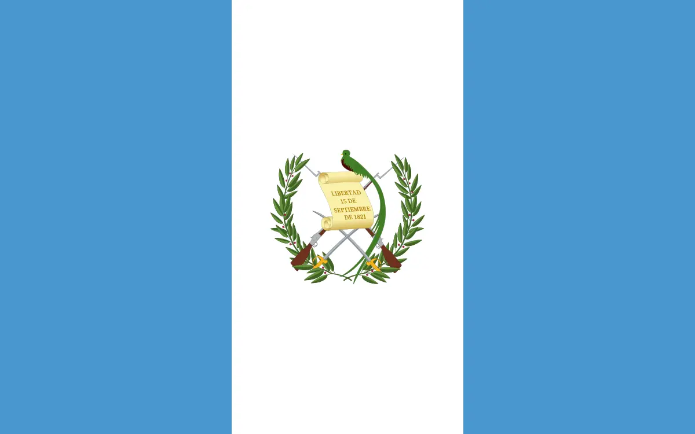

About Me
Hello, my name is Nilberth Escobar. I was born and raised in Guatemala, Central America. I wasn't sure what to study. I've been interested in technology since my father bought our first computer. Started playing videogames and I've been hooked ever since.
San Marcos, Guatemala
San Marcos is one of the cities with a crazy weather, or I should say weathers, haha. During summer it's hot in the mornings and cold in the evenings, and during the winter it rains a lot. The city is located like 2 or 3 hours from the Mexican border. You can cross the border by car or by bus and also by boat.